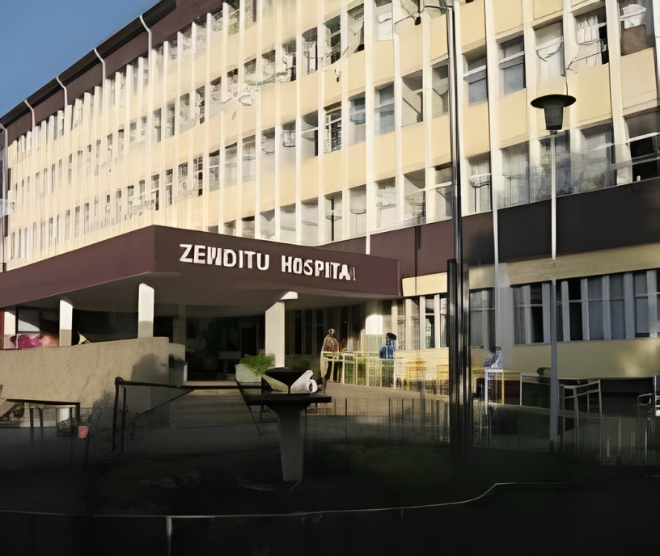

MedEthiopia
| Home | Hospitals | Doctors | Blog | Sign Up | Log In |
Hospitals list
Nordic medical centreThe Nordic Medical Centre (NMC) is Norwegian run and staffed by highly experienced international and Ethiopian medical professionals.
➤ Bole Sub City, Kebele 01, House No. 1244, Addis Ababa, Ethiopia
NMC offers a wide range of diagnostic and treatment services to comprehensively meet your medical needs in one convenient location. Highly experienced staff are on duty 24/7 and available to care for you and your family at all times. Click on any of the services below to get a detailed description of what we offer.
|
Bethzatha General HospitalStaffed by renowned Internal Medicine specialists and equipped with state-of-the-art medical facilities and labs.
➤ Next to Addis Ababa Stadium, Ethiopia
To willingly serve all those with whom we deal with professional excellence by setting high standards of ethics and integrity under which we operate. Click on any of the services below to get a detailed description of what we offer.
|

Ethio Tebib General HospitalThe Ethio Tebib General Hospital is a health institution in Ethiopia that Specializes in general medicine, surgery, and pediatrics.
➤ Mesalemia,Sefere Selam ,kolfe ,Addis Ababa, Ethiopia
Ethio Tebib General Hospital is an all around specialising hospital offering the best healthcare and has a fully quipped modern operation theatre. The mission is to deliver high quality medical care through a wide range of facilities and services. For both inpatient and outpatient care, the goal is to provide comprehensive treatments for all ailments, from minor injuries through complex surgeries. The hospital aims to be a leading resource for patients from the region, guaranteeing state of the art care with the latest equipment and technology available. |


Amin General HospitalThe Amin General Hospital is Amin General Hospital is a health institution established in March, 2012.
➤ Abenet near CocaCola factory, Addis Ababa, Ethiopia
|

Myung Sung Christian Medical Center, ኮሪያ ሆስፒታልSpecializes in cardiology, neurology, and oncology and it Has a cardiac catheterization lab and radiation therapy center
➤ Wereda 14, Gerji, Bole Sub-City, Addis Ababa, Ethiopia
|

Tibebe Ghion Specialized HospitalTibebe Ghion Hospital (Bahirdar,Ethiopia)Specializes in general medicine, surgery, and pediatrics. Has laboratory and an ultrasound department
➤ Nearby to Bahir Dar Prison around Mota Road,Ethiopia.
|

Addis Hiwot General HospitalThe Addis Hiwot General Hospital Offers specialized medical services, such as cardiac care,
➤ Bole Sub-city Wereda 4, Addis Ababa, Ethiopia.
|
Hayat HospitalHayat Hospital Offers a range of general and specialized healthcare services, known for its patient-centered approach to healthcare.
➤ bole , Addis Ababa, Ethiopia
|

Saint Gabriel General HospitalSaint Gabriel General Hospital Offers comprehensive healthcare services and is known for its commitment to patient care and medical excellence.
➤ Bole Around Hayahulet On the way to Bole Medhannialem,Ethiopia
|

Tikur Anbessa Specialized HospitalTikur Anbessa Specialized Hospital is the largest specialized hospital in Ethiopia.its a prominent teaching hospital that offers a wide range of medical services and is affiliated with Addis Ababa University.
➤ Lideta subcity,Addis Ababa, Ethiopia.
|
Ayder Specialized HospitalAyder Specialized Hospital is a major hospital in the Tigray region, affiliated with Mekelle University, and known for its teaching and healthcare services.
➤ Ayder Street, Mekelle,Tigray,Ethiopia
|

Yekatit 12 Hospital(የካቲት 12 ሆስፒታል)Renowned for its medical college and comprehensive hospital services, providing quality healthcare and training future medical professionals.
➤ Sidist Kilo, Addis Ababa, Ethiopia
|
Silk Road General Hospital(AASRGH)Silk Road General Hospital includes Medical Departments with
➤ Next to Sarbet Gibson Academy, opposite site of the Vatican Embassy, Addis Ababa
|
iCMC General HospitalICMC is known for its modern facilities and comprehensive healthcare services. It offers specialized departments, including cardiovascular surgery, urology, and gastroenterology.
➤ Around CMC Roundabout, Behind Tsehay Real Estate, Addis Ababa, Ethiopia
|

Zewditu Memorial HospitalZewditu Memorial Hospital is a government-funded hospital known for its comprehensive healthcare services. It offers various specialties, including obstetrics and gynecology, pediatrics, and general surgery.
➤ Kirkos Addis Ababa, Ethiopia.
|
Samaritan Surgical center (ሳማሪታን የቀዶ ህክምና ማዕከል)Samaritan Surgical center It is renowned for its excellence in surgical services and patient-centered care. The center is equipped with advanced technology and a highly skilled team of surgeons, nurses, and support staff dedicated to delivering exceptional healthcare.
➤ Inside the Sunshine Real State Compound (Meri-Luki), Addis Ababa, Ethiopia
|

St.Paulos HospitalThis hospital is a teaching hospital affiliated with St. Paul's Hospital Millennium Medical College. It offers specialized services and is well-known for its excellence in patient care and medical education.
➤ Gulele Sub-City, Addis Ababa, Ethiopia
|
Gamby HospitalGAMBY delivers exceptional care guided by the needs of patients and their families, Our staffs also serve on the faculty
➤ Near Textile- Bahir Dar, Ethiopia
|
The MedEthiopia staff members are well-trained professionals.